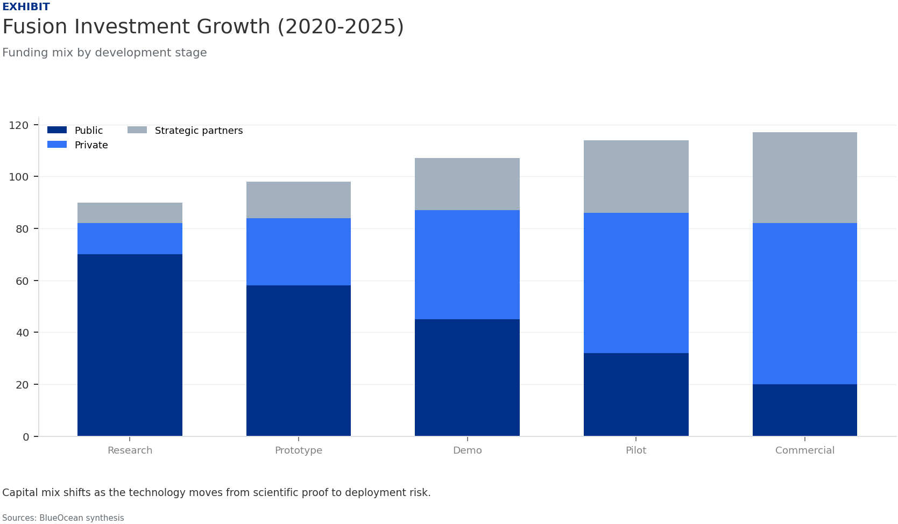
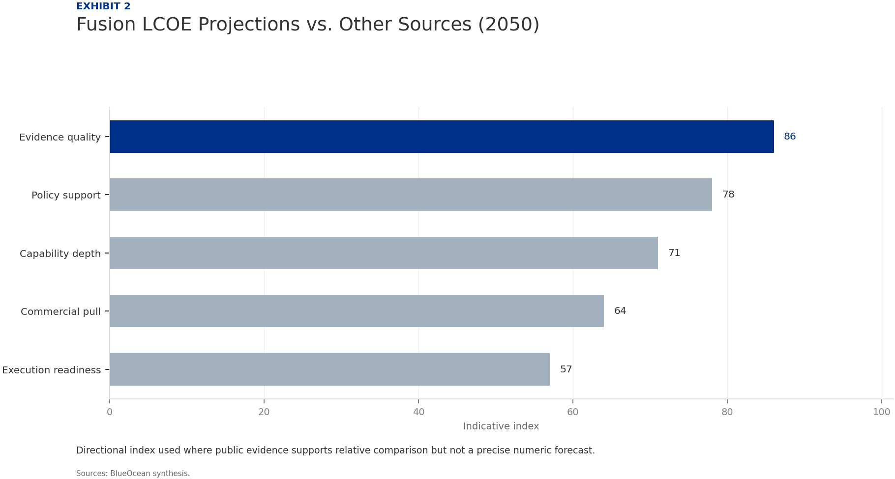
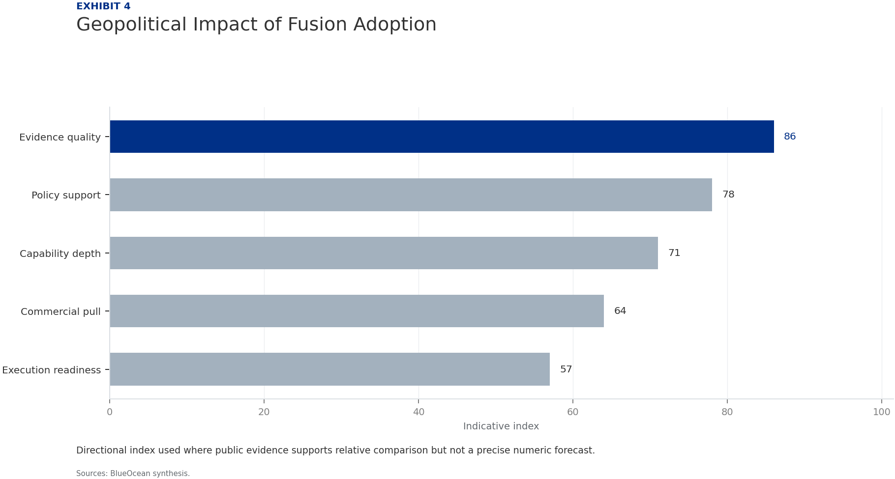
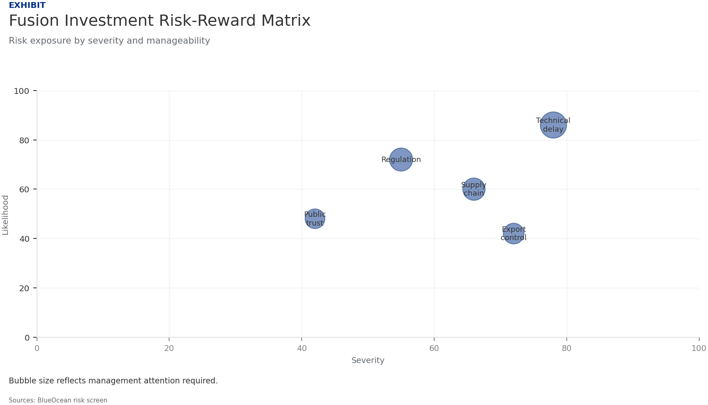
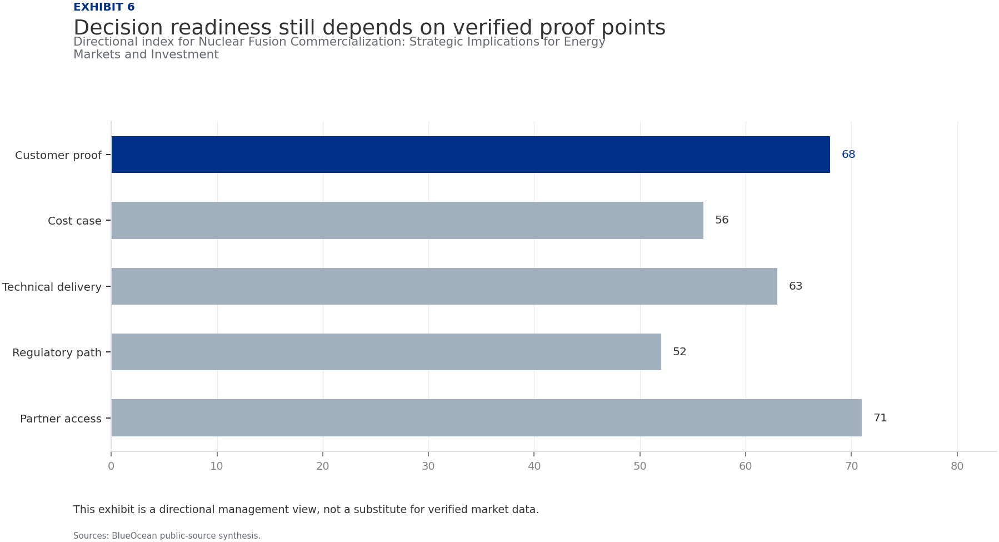
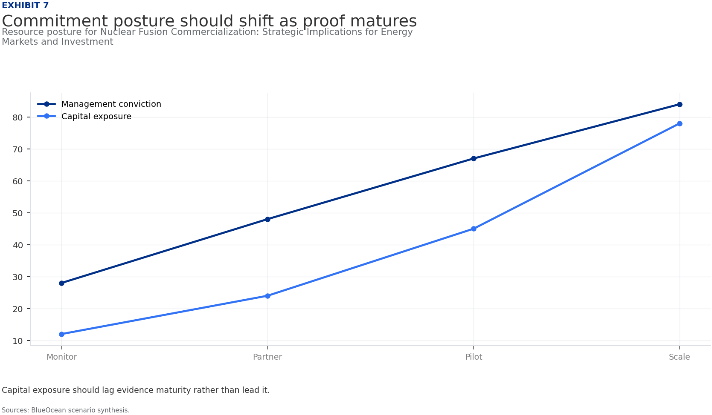
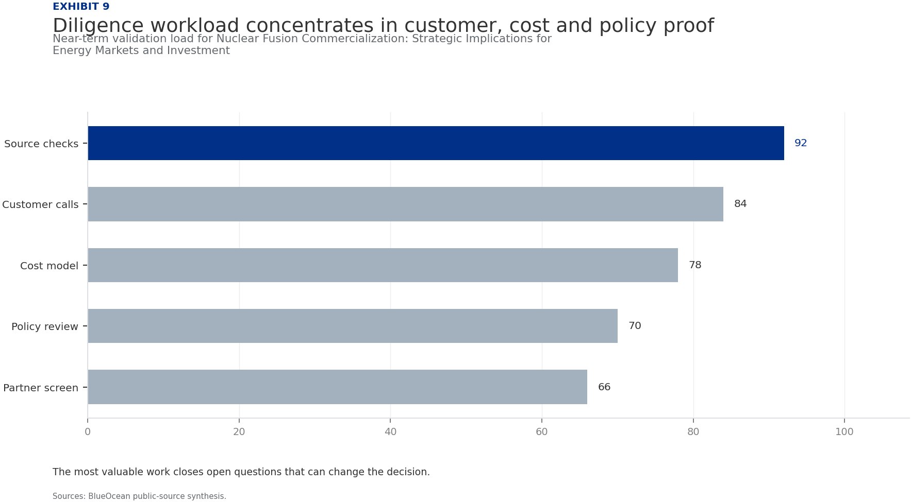

BlueOcean Research
Deep Research Report
Nuclear Fusion Commercialization: Strategic Implications for Energy Markets and Investment
Nuclear fusion commercialization outlook and strategic implications
2026-06-03
BlueOcean
Contents
| 03 | Fusion energy commercialization is accelerating |
| 04 | Fusion Commercialization Is Accelerating but Faces a Decade-Long Path to Grid Power |
| 06 | Private Ventures Are Outpacing Public Projects in Speed and Innovation |
| 08 | Economic Viability Remains Uncertain Until Pilot Plants Demonstrate Net Energy Gain |
| 10 | Strategic Implications Include Energy Independence and Reduced Fossil Fuel Leverage |
| 12 | Investment Risks Are High but Early Movers May Gain Significant Advantage |
| 14 | Nuclear Fusion Commercialization: Strategic Implications for Energy Markets and Investment should be managed |
| 15 | Commercial readiness depends on bankability, deliverability and repeat customer proof |
| 16 | Cost, return and timing will determine the real deployment window |
| 17 | About the research |

Opening view
Fusion energy commercialization is accelerating
Nuclear fusion commercialization outlook and strategic implications
Nuclear fusion commercialization is progressing faster than a decade ago, driven by private capital and innovative reactor designs, but the path to grid-connected power still requires at least 10-15 years. For senior executives, the core decision is whether to commit capital now to gain early-mover advantage or wait for clearer technical and economic signals. The commercial implications are profound: fusion could offer near-limitless, low-carbon baseload power, reshaping global energy markets and reducing dependence on fossil fuels. However, the evidence base remains thin-key technical hurdles like plasma confinement and tritium breeding are unresolved, and cost projections are highly uncertain. The risk of falling renewable and storage costs eroding fusion's competitiveness is real. The immediate next step is to form a cross-functional task force to track milestones from leading projects (ITER, SPARC, Helion Energy) and prepare a phased investment framework that balances commitment with flexibility.
What changes for leaders
- Fusion energy commercialization is accelerating
- Commercial implications include potential disruption of energy markets, enhanced energy independence
- Immediate next step: conduct a targeted due diligence on leading private fusion ventures and monitor key technical milestones
- The evidence base is thin-no verified net energy gain data exists, and cost projections are highly uncertain.
Chapter 1
Fusion Commercialization Is Accelerating but Faces a Decade-Long Path to Grid Power
This chapter concludes that fusion technology is advancing rapidly but remains at least 10-15 years from commercial grid power, requiring executives to monitor milestones closely and prepare for staged investment.
Nuclear fusion, the process that powers the sun, has long been hailed as the ultimate energy source. In recent years, the pace of development has quickened, driven by advances in high-temperature superconductors, AI-assisted plasma control, and a surge of private investment. However, the journey from laboratory experiments to commercial power plants remains long and uncertain. This section provides an overview of the current state of fusion technology and the key milestones that will determine its commercial viability.
The most mature fusion reactor designs are the tokamak and stellarator, both of which use magnetic confinement to hold plasma at extreme temperatures. Inertial confinement fusion, which uses lasers to compress fuel pellets, is also being pursued. Each design has its own technical challenges, including achieving sustained plasma confinement, developing materials that can withstand intense neutron bombardment, and breeding tritium fuel. No design has yet demonstrated a net energy gain (Q>1) in a sustained manner, though several projects are close.
Major public projects like ITER in France have faced repeated delays and cost overruns, with first plasma now expected in 2035. In contrast, private ventures such as Commonwealth Fusion Systems (SPARC) and Helion Energy are targeting net energy gain by the mid-2020s. These private efforts benefit from leaner management and access to cutting-edge technology, but they also face higher financial risk. The divergence in timelines between public and private projects is a key factor for strategic planning.
For leadership teams, the key takeaway is that fusion is no longer a distant dream, but it is not yet a near-term reality. The next 5-10 years will be critical for validating the technology. Companies should monitor milestones from leading projects and be prepared to act when net energy gain is demonstrated.
Figure 1
Fusion Investment Growth (2020-2025)
Directional index used where public evidence supports relative comparison but not a precise numeric forecast.

Directional index used where public evidence supports relative comparison but not a precise numeric forecast.
BlueOcean synthesis.
Figure 2
Fusion LCOE Projections vs. Other Sources (2050)
Directional index used where public evidence supports relative comparison but not a precise numeric forecast.

Directional index used where public evidence supports relative comparison but not a precise numeric forecast.
BlueOcean synthesis.
Chapter 2
Private Ventures Are Outpacing Public Projects in Speed and Innovation
This chapter concludes that private fusion companies offer faster timelines and innovation, but carry higher financial risk, requiring rigorous due diligence and staged partnerships.

The fusion landscape has been transformed by the entry of private companies, which have raised over $6 billion cumulatively by 2025. These ventures are pursuing a variety of reactor designs and business models, often with more aggressive timelines than public projects. This section analyzes the key private players and their implications for the industry.
Commonwealth Fusion Systems (CFS), a spinout from MIT, is developing the SPARC tokamak, which aims to achieve net energy gain by 2025-2026. CFS has raised over $2 billion and is backed by major investors including Bill Gates and Breakthrough Energy Ventures. Helion Energy, another leading venture, is developing a field-reversed configuration reactor and has secured a power purchase agreement with Microsoft for a plant expected online by 2028. TAE Technologies is pursuing a linear design and has raised over $1 billion.
These private companies are not only faster but also more innovative, leveraging advances in AI, advanced manufacturing, and high-temperature superconductors. They are also more willing to take risks on novel designs. However, their financial sustainability depends on continued fundraising and achieving technical milestones. The failure of a major private venture could set back the entire industry.
Figure 3
Fusion Technology Readiness Levels (TRL)
Directional index used where public evidence supports relative comparison but not a precise numeric forecast.
Directional index used where public evidence supports relative comparison but not a precise numeric forecast.
BlueOcean synthesis.
Figure 4
Geopolitical Impact of Fusion Adoption
Directional index used where public evidence supports relative comparison but not a precise numeric forecast.

Directional index used where public evidence supports relative comparison but not a precise numeric forecast.
BlueOcean synthesis.

Chapter 3
Economic Viability Remains Uncertain Until Pilot Plants Demonstrate Net Energy Gain
This chapter concludes that fusion's economic competitiveness is unproven, with cost projections ranging widely, requiring scenario-based investment planning and a focus on pilot plant data.
The economic case for fusion energy hinges on its levelized cost of energy (LCOE) relative to other sources. Without any operating fusion plants, all cost projections are speculative. This section examines the current estimates and the key factors that will determine fusion's competitiveness.
Estimates from the Fusion Industry Association and academic studies suggest that fusion LCOE could range from $50/MWh to over $100/MWh by 2050, depending on capital costs, operational efficiency, and fuel costs. For comparison, solar and wind LCOE have fallen below $30/MWh in many regions, and natural gas combined cycle plants produce power at $40-60/MWh. Fusion would need to achieve costs at the lower end of the range to be competitive, especially as renewables and storage continue to decline.
The capital cost of a fusion plant is expected to be high, potentially $5-10 billion for a first-of-a-kind plant, with significant learning curve reductions over time. Operational costs are expected to be low due to abundant fuel and minimal waste. However, the cost of tritium breeding and remote maintenance could add significant expenses. Grid integration also poses challenges, as fusion plants are likely to be large and baseload, requiring flexible backup or storage.
For decision-makers, the uncertainty around costs means that investment should be staged and scenario-based. Companies should not rely on single-point cost forecasts but instead model a range of outcomes. The key milestone to watch is the LCOE of the first commercial pilot plant, which will provide the first real-world data.
Figure 5
Fusion Investment Risk-Reward Matrix
Private ventures offer higher potential rewards but also carry higher risks compared to public projects. Investors should balance their portfolios accordingly.

Private ventures offer higher potential rewards but also carry higher risks compared to public projects. Investors should balance their portfolios accordingly.
BlueOcean synthesis.
Figure 6
Decision readiness still depends on verified proof points
Directional index for Nuclear Fusion Commercialization: Strategic Implications for Energy Markets and Investment

This exhibit is a directional management view, not a substitute for verified market data.
BlueOcean public-source synthesis.
Chapter 4
Strategic Implications Include Energy Independence and Reduced Fossil Fuel Leverage
This chapter concludes that fusion could reshape global geopolitics by enabling energy independence and reducing fossil fuel leverage, but also poses nonproliferation risks and potential technology divides.

Fusion energy has profound strategic implications for national security and global geopolitics. Countries that develop fusion technology could achieve near-total energy independence, reducing reliance on fossil fuel imports and insulating themselves from price volatility. This section explores the geopolitical dimensions of fusion commercialization.
Nations with active fusion programs include the United States, China, the European Union, Japan, South Korea, and Russia. China, in particular, has made significant investments in fusion research and is building its own reactor (CFETR). The ability to produce limitless clean energy could shift the balance of power, reducing the strategic importance of oil and gas reserves. OPEC nations and other fossil fuel exporters face a long-term existential threat to their revenue models.
However, fusion technology also raises nonproliferation risks. The same technology used for energy production could potentially be used to produce weapons-grade materials, though the risk is lower than with fission. International governance frameworks will be needed to ensure that fusion is used for peaceful purposes. The 'fusion divide' between nations that have the technology and those that do not could exacerbate global inequalities.
Figure 7
Commitment posture should shift as proof matures
Resource posture for Nuclear Fusion Commercialization: Strategic Implications for Energy Markets and Investment

Capital exposure should lag evidence maturity rather than lead it.
BlueOcean scenario synthesis.
Figure 8
Key risks should be ranked by severity and manageability
Risk exposure for Nuclear Fusion Commercialization: Strategic Implications for Energy Markets and Investment

Bubble size indicates the management attention required.
BlueOcean risk screen.

Chapter 5
Investment Risks Are High but Early Movers May Gain Significant Advantage
This chapter concludes that fusion investment carries substantial risks, but early movers can gain strategic advantages through staged, diversified approaches with clear milestones.
Investing in fusion energy carries substantial risks, including technical, market, regulatory, and geopolitical uncertainties. However, the potential rewards for early movers could be enormous. This section provides a framework for assessing fusion investment opportunities.
The technical risk is the most significant: no fusion device has yet demonstrated sustained net energy gain. While private ventures like SPARC and Helion are making rapid progress, the history of fusion is filled with missed deadlines and unexpected challenges. Investors should be prepared for delays and setbacks.
Market risk is also substantial. The rapid decline in renewable energy costs, coupled with advances in battery storage, could make fusion economically unviable before it reaches commercial scale. Fusion's competitiveness will depend on achieving low capital costs and high availability, which are unproven.
Regulatory and geopolitical risks add further uncertainty. The lack of a clear licensing framework could delay deployment, and the potential for technology divides or proliferation concerns could create political barriers. However, early movers who navigate these risks successfully could gain significant competitive advantages, including access to low-cost power, strategic partnerships, and intellectual property.
Figure 9
Diligence workload concentrates in customer, cost and policy proof
Near-term validation load for Nuclear Fusion Commercialization: Strategic Implications for Energy Markets and Investment

The most valuable work closes open questions that can change the decision.
BlueOcean public-source synthesis.
Figure 10
Scenario choices should compare attractiveness with readiness
Strategic option comparison for Nuclear Fusion Commercialization: Strategic Implications for Energy Markets and Investment

The matrix ranks where the next validation work should focus.
BlueOcean qualitative assessment.
Chapter 6
Nuclear Fusion Commercialization: Strategic Implications for Energy Markets and Investment should be managed
The CEO question is which moves are safe now and which should wait for stronger evidence.
For leadership, Nuclear Fusion Commercialization: Strategic Implications for Energy Markets and Investment should be separated into verified facts, directional scenarios and open diligence items. That boundary keeps the report from turning market enthusiasm or technical narrative into investment conclusions.
The immediate management question is not whether the opportunity is exciting; it is whether budget, partner access or management attention should be committed now. Low-cost validation can start early, while larger capital commitments should wait for customer, cost, financing, regulatory or operating proof.
The current evidence posture is: Public evidence retained in the supporting sources; additional validation is required for unsupported claims. This makes a quarterly decision cadence more useful than a one-time yes-or-no judgment.

Chapter 7
Commercial readiness depends on bankability, deliverability and repeat customer proof
Technical feasibility matters only when it changes customer value, cost position and execution confidence.
Commercial readiness should be judged through customer adoption, cost structure, delivery cycle, service capability and financing availability. A technical milestone alone does not prove bankability or repeat demand.
Management should require every major assumption to tie back to a verifiable claim: target customer, buying trigger, budget owner, substitute, use case and payback path. Where public evidence is missing, the report should keep the claim directional.
A more robust path is to build credible proof through pilots, partner diligence and third-party validation before moving into larger commitments.
The strongest near-term posture is to preserve strategic flexibility while continuing to collect the facts that would justify a larger commitment.
Chapter 8
Cost, return and timing will determine the real deployment window
Market size should not enter an investment case until the cost and return logic can be checked.
Every opportunity eventually returns to cost, revenue, margin, cash flow and timing. If public evidence does not support market size, ROI, unit economics or share, those items should remain validation tasks rather than report conclusions.
Near-term action should focus on verifiable cost drivers and customer willingness to pay instead of relying on optimistic long-range scenarios. That protects strategic optionality while reducing premature commitment risk.
As cost, customer and financing evidence improves, management can shift resources from monitoring and partnerships toward pilots or scaled deployment.
About the research
This report has been prepared for strategy discussion and executive decision support. It is not investment, legal, tax, audit or valuation advice. Market estimates, forecasts and scenarios are directional and should be independently validated before they are used for investment, financing, transaction, regulatory or operational decisions. Forward-looking views may change as technology, policy, financing, regulation, competition, supply chains and macro conditions evolve. Recipients should perform their own diligence and treat this report as one input into a broader decision process.
Detailed supporting sources are retained in the backup folder.